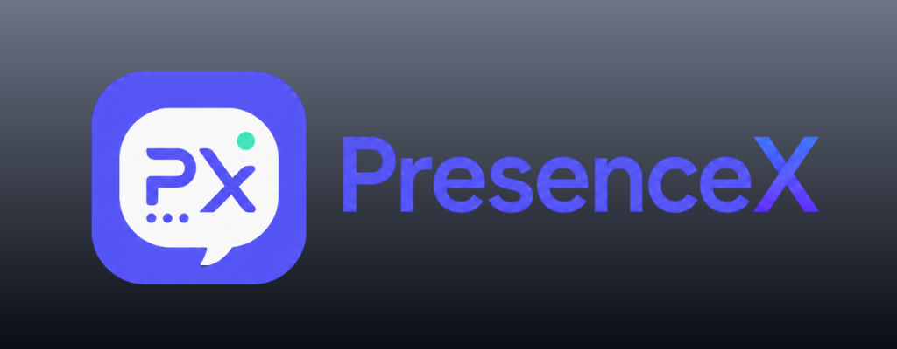

Créditos
Hecha con reportes reales.
PresenceX empezó como una herramienta práctica y se convirtió en un producto gracias a quienes probaron lo que todavía no estaba listo.

TECNO BROS
PresenceX está diseñada, desarrollada y mantenida por TECNO BROS. El equipo se encarga del producto, la integración con Android, la interfaz, la infraestructura y cada lanzamiento.
No nació en una reunión de marca. Nació al intentar que Rich Presence funcionara bien desde un móvil: con la pantalla apagada, en dispositivos que cierran procesos y con imágenes que Discord decide tratar de forma distinta según su origen.
La comunidad
Muchas de las decisiones actuales salen de reportes concretos: una canción que no cambiaba, una app que no aparecía, una navegación Atrás que terminaba en la pantalla equivocada o un permiso que un fabricante escondía. Gracias a cada persona que envió logs, capturas y volvió a probar una corrección.
Tecnología
PresenceX utiliza React Native y Expo para la experiencia de producto, Kotlin para las integraciones profundas con Android, Discord Gateway para las presencias y Firebase para analítica, diagnóstico y notificaciones.
Trabajo abierto
PresenceX usa librerías abiertas mantenidas por personas que dedican tiempo a mejorar el ecosistema móvil. Los catálogos de juegos conservan los créditos de sus respectivas fuentes.
© 2026 TECNO BROS. Todos los derechos reservados.